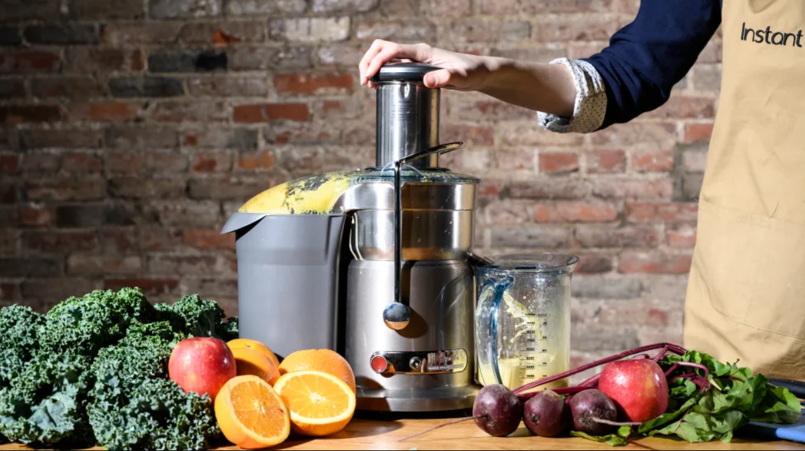

Welcome to the world of Juicers
Explore a wide range of products that meet the requirements of Juice lovers.

Better Health, Better Life
We believe juicing plays an important role in supporting our immune system with nutrients. It is easy to digest and easy to absorb. The body digests juice in 10-15 minutes vs. food, which takes 2-3 hours. Did you know, smoothies take longer to digest? It is because one, there is insoluble fiber in these smoothies and two, people rarely ‘chew’ them to start the digestive process in their mouths, creating a slower digestive process than eating.